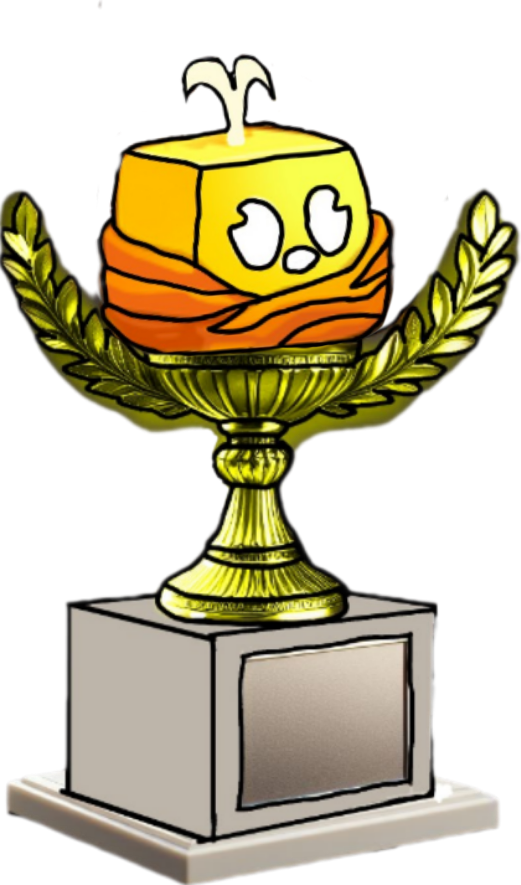

O Pagoneio é um torneio de PvP valendo uma fruta no jogo Blox Fruits, realizado no Coliseu com um formato de mata-mata, similar ao futebol. Acontecerá em
??/12/2024


??/12/2024
O Pagoneio é um torneio de PvP valendo uma fruta no jogo Blox Fruits, realizado no Coliseu com um formato de mata-mata, similar ao futebol.
Para participar, clique nos troféus acima. Eles o levarão ao nosso servidor do Discord, onde as competições são organizadas.
Cada partida será disputada em um formato de melhor de três (MD3).
Não é permitido o uso de cheats, hacks ou qualquer forma de trapaça.
Respeito entre os participantes é obrigatório. Insultos ou comportamentos inadequados resultarão em desqualificação.
As Batalhas deverão ser feitas em 1v1 no Coliseu do 2 ou 1 Sea
terá o tempo limite de 3 minutos cada batalha ( fase de grupos ) 5 minutos as oitavas 7 minutos semis e final.
É proibido o uso de Transformação de Frutas ( exceto a Buddha )
O Uso da V4 só é permitida se os dois Participantes tiverem e se for a Última rodada no melhor de 3.
Fase de Grupos: Todas as 8 equipes de 4 jogadores jogam entre si dentro do grupo. As duas melhores avançam. Eliminatórias: Sistema de eliminatória simples. Perdeu, está fora! Melhor de três (MD3) Grande Final: Melhor de Cinco (MD5) para determinar o campeão.
1º Lugar: Fruta do Torneio + Memorial + Vaga para a Super Pagoneio
[2023] A primeira edição aconteceu em dezembro, valendo a fruta Rumble. Esperávamos 32 participantes, mas apenas 6 compareceram e 4 competiram, com Thz, um usuário de kitsune, sendo o campeão.
[1-2024] A edição do primeiro trimestre de 2024 valeu a fruta Control. Tivemos 8 participantes, com as quartas de final sendo disputadas, e Blitz foi o campeão.
[2-2024] A edição ira acontecer em Dezembro de 2024..
A Super Pagoneio é uma disputa entre o campeão atual e o campeão anterior. Apenas uma pessoa pode possuir este tÃtulo, ou seja, o campeão atual.
O primeiro campeão da Super Pagoneio foi Blitz, por W.O., devido a Thz, o primeiro campeão, ter passado a vitória para ele. (1-2024)


Thz | 2023
Blitz | 1-2024

Bem-vindo à nossa seção dedicada aos personagens! Aqui, você encontrará uma lista completa e detalhada dos personagens que fazem parte de nossas histórias, jogos e mundos. Cada personagem possui uma biografia única, com informações sobre sua origem, habilidades, personalidade, motivações e muito mais. Descubra suas histórias, explore suas conexões com outros personagens e entenda o papel que desempenham no universo em que vivem. Se você é um fã de histórias ricas em personagens profundos e complexos, esta seção será seu ponto de referência para tudo sobre eles!
Bem-vindo ao desafio supremo do universo Blox Fruits! Aqui é onde os verdadeiros guerreiros testam suas habilidades, estratégias e poderes para alcançar a glória. O Torneio PvP é o palco onde piratas, espadachins e usuários de frutas demonÃacas se enfrentam em batalhas épicas, repletas de ação e adrenalina. Está preparado para provar que é o mais forte e conquistar o tÃtulo de campeão? Monte sua estratégia, aperfeiçoe seus combos e entre na arena a vitória está a um golpe de distância!

Descubra as lendárias aventuras de Ordnary, um personagem envolto em mistério, coragem e escolhas que moldaram mundos. A saga de Ordnary transcende dimensões, conectando histórias épicas em universos como Blox Fruits e Minecraft. Cada filme revela novas camadas de sua personalidade, seus desafios com inimigos enigmáticos e a luta contra o vazio que ameaça tudo ao seu redor. Prepare-se para embarcar em jornadas cinematográficas que exploram amizade, sacrifÃcio e o destino de mundos abandonados porque, no universo de Ordnary, cada momento importa.

Descubra uma coleção de jogos incrÃveis, onde criatividade e diversão se encontram! Seja desbravando mundos desconhecidos, enfrentando desafios épicos ou testando suas habilidades em partidas estratégicas, cada jogo oferece uma experiência única e envolvente. Aqui, a paixão pelo entretenimento digital ganha vida, convidando você a explorar, competir e se divertir como nunca!